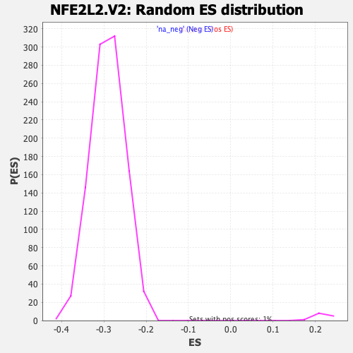

| | | Dataset | DE_genes2 |
| Phenotype | NoPhenotypeAvailable |
| Upregulated in class | na_neg |
| GeneSet | NFE2L2.V2 |
| Enrichment Score (ES) | -0.4686816 |
| Normalized Enrichment Score (NES) | -1.6106836 |
| Nominal p-value | 0.0 |
| FDR q-value | 0.0063254177 |
| FWER p-Value | 0.135 |
Table: GSEA Results Summary
 Fig 1: Enrichment plot: NFE2L2.V2
Fig 1: Enrichment plot: NFE2L2.V2
Profile of the Running ES Score & Positions of GeneSet Members on the Rank Ordered List
| PROBE | GENE SYMBOL | GENE_TITLE | RANK IN GENE LIST | RANK METRIC SCORE | RUNNING ES | CORE ENRICHMENT | | 1 | FERMT1 | | | 228 | 4.803 | -0.0063 | No |
| 2 | L1CAM | | | 299 | 4.436 | -0.0035 | No |
| 3 | MMP7 | | | 415 | 3.935 | -0.0043 | No |
| 4 | HVCN1 | | | 695 | 3.212 | -0.0163 | No |
| 5 | NCF2 | | | 769 | 3.084 | -0.0158 | No |
| 6 | HYAL4 | | | 780 | 3.075 | -0.0115 | No |
| 7 | RAB42 | | | 833 | 2.975 | -0.0099 | No |
| 8 | SRGN | | | 957 | 2.785 | -0.0130 | No |
| 9 | CEACAM7 | | | 961 | 2.779 | -0.0087 | No |
| 10 | CKAP4 | | | 967 | 2.771 | -0.0046 | No |
| 11 | PHLDB1 | | | 1116 | 2.580 | -0.0095 | No |
| 12 | CYP8B1 | | | 1158 | 2.527 | -0.0080 | No |
| 13 | SRI | | | 1175 | 2.500 | -0.0049 | No |
| 14 | SMG6 | | | 1190 | 2.482 | -0.0018 | No |
| 15 | P2RY6 | | | 1497 | 2.179 | -0.0172 | No |
| 16 | STAT4 | | | 1703 | 1.987 | -0.0266 | No |
| 17 | GLP2R | | | 1744 | 1.956 | -0.0260 | No |
| 18 | HGD | | | 1809 | 1.908 | -0.0268 | No |
| 19 | PRR36 | | | 1819 | 1.905 | -0.0243 | No |
| 20 | GNE | | | 1849 | 1.879 | -0.0231 | No |
| 21 | CCL17 | | | 1961 | 1.785 | -0.0270 | No |
| 22 | SLC15A1 | | | 2143 | 1.653 | -0.0356 | No |
| 23 | PRR5 | | | 2156 | 1.646 | -0.0336 | No |
| 24 | TRIML2 | | | 2299 | 1.560 | -0.0399 | No |
| 25 | TNIP3 | | | 2405 | 1.490 | -0.0440 | No |
| 26 | SHISA2 | | | 2406 | 1.489 | -0.0416 | No |
| 27 | SPPL2B | | | 2436 | 1.471 | -0.0410 | No |
| 28 | PTDSS2 | | | 2437 | 1.470 | -0.0386 | No |
| 29 | LCN2 | | | 2532 | 1.427 | -0.0421 | No |
| 30 | NINJ2 | | | 2625 | 1.374 | -0.0456 | No |
| 31 | ICMT | | | 2628 | 1.373 | -0.0435 | No |
| 32 | ODF3L1 | | | 2642 | 1.367 | -0.0421 | No |
| 33 | WNT11 | | | 2683 | 1.348 | -0.0424 | No |
| 34 | SMIM22 | | | 2705 | 1.332 | -0.0415 | No |
| 35 | EPHX1 | | | 2750 | 1.308 | -0.0422 | No |
| 36 | FLT1 | | | 2911 | 1.233 | -0.0500 | No |
| 37 | TREX1 | | | 2962 | 1.212 | -0.0512 | No |
| 38 | PDE6B | | | 3187 | 1.114 | -0.0632 | No |
| 39 | PLXND1 | | | 3215 | 1.106 | -0.0631 | No |
| 40 | REPS2 | | | 3223 | 1.103 | -0.0617 | No |
| 41 | TPPP3 | | | 3229 | 1.101 | -0.0603 | No |
| 42 | PDZK1 | | | 3299 | 1.076 | -0.0628 | No |
| 43 | NAV2 | | | 3391 | 1.042 | -0.0667 | No |
| 44 | RTKN2 | | | 3395 | 1.042 | -0.0652 | No |
| 45 | DRD5 | | | 3409 | 1.035 | -0.0644 | No |
| 46 | PTPMT1 | | | 3464 | 1.017 | -0.0661 | No |
| 47 | C1S | | | 3483 | 1.011 | -0.0656 | No |
| 48 | SPDYE3 | | | 3491 | 1.008 | -0.0644 | No |
| 49 | DEFB1 | | | 3535 | 0.994 | -0.0654 | No |
| 50 | GPC1 | | | 3578 | 0.979 | -0.0664 | No |
| 51 | TSKU | | | 3746 | 0.915 | -0.0753 | No |
| 52 | CDKN2B | | | 3797 | 0.895 | -0.0769 | No |
| 53 | PIP | | | 3854 | 0.879 | -0.0790 | No |
| 54 | TALDO1 | | | 3860 | 0.878 | -0.0778 | No |
| 55 | SFN | | | 3958 | 0.849 | -0.0825 | No |
| 56 | HYDIN | | | 3974 | 0.845 | -0.0820 | No |
| 57 | HLA-DQB1 | | | 4127 | 0.802 | -0.0901 | No |
| 58 | TNFRSF11B | | | 4131 | 0.800 | -0.0890 | No |
| 59 | LEP | | | 4157 | 0.791 | -0.0893 | No |
| 60 | ACOT11 | | | 4173 | 0.786 | -0.0889 | No |
| 61 | PRSS53 | | | 4209 | 0.775 | -0.0899 | No |
| 62 | GGA2 | | | 4325 | 0.742 | -0.0958 | No |
| 63 | ACKR3 | | | 4364 | 0.730 | -0.0969 | No |
| 64 | BCAS1 | | | 4393 | 0.722 | -0.0975 | No |
| 65 | RNF212 | | | 4522 | 0.687 | -0.1043 | No |
| 66 | MRAP2 | | | 4651 | 0.649 | -0.1111 | No |
| 67 | UBXN10 | | | 4686 | 0.640 | -0.1122 | No |
| 68 | AXIN2 | | | 4742 | 0.627 | -0.1146 | No |
| 69 | KIAA1324 | | | 4891 | 0.595 | -0.1228 | No |
| 70 | FZD7 | | | 4908 | 0.592 | -0.1228 | No |
| 71 | CFI | | | 4969 | 0.577 | -0.1256 | No |
| 72 | HDAC9 | | | 5031 | 0.563 | -0.1284 | No |
| 73 | BCL2L11 | | | 5044 | 0.560 | -0.1283 | No |
| 74 | SREBF1 | | | 5045 | 0.559 | -0.1274 | No |
| 75 | TRIM29 | | | 5125 | 0.537 | -0.1314 | No |
| 76 | FTH1 | | | 5136 | 0.533 | -0.1311 | No |
| 77 | HSPB3 | | | 5153 | 0.529 | -0.1313 | No |
| 78 | STYK1 | | | 5160 | 0.528 | -0.1308 | No |
| 79 | IGFBP3 | | | 5172 | 0.526 | -0.1306 | No |
| 80 | AKR1B1 | | | 5243 | 0.507 | -0.1341 | No |
| 81 | MACC1 | | | 5307 | 0.490 | -0.1372 | No |
| 82 | CD101 | | | 5335 | 0.484 | -0.1381 | No |
| 83 | TF | | | 5362 | 0.477 | -0.1390 | No |
| 84 | FAM167B | | | 5481 | 0.454 | -0.1455 | No |
| 85 | UGT1A6 | | | 5576 | 0.432 | -0.1506 | No |
| 86 | KIAA0232 | | | 5700 | 0.405 | -0.1576 | No |
| 87 | ZNF649 | | | 5754 | 0.393 | -0.1602 | No |
| 88 | UGT1A8 | | | 5790 | 0.387 | -0.1617 | No |
| 89 | ITGB8 | | | 5895 | 0.366 | -0.1676 | No |
| 90 | CPLX1 | | | 5945 | 0.357 | -0.1700 | No |
| 91 | C1orf21 | | | 6005 | 0.345 | -0.1731 | No |
| 92 | SLC1A4 | | | 6025 | 0.341 | -0.1737 | No |
| 93 | FUT1 | | | 6260 | 0.292 | -0.1877 | No |
| 94 | EFCAB14 | | | 6310 | 0.285 | -0.1903 | No |
| 95 | PNPLA4 | | | 6321 | 0.282 | -0.1904 | No |
| 96 | PALLD | | | 6397 | 0.264 | -0.1946 | No |
| 97 | MUC5AC | | | 6403 | 0.263 | -0.1945 | No |
| 98 | ABCB6 | | | 6431 | 0.258 | -0.1958 | No |
| 99 | WDR87 | | | 6488 | 0.247 | -0.1988 | No |
| 100 | ABHD4 | | | 6600 | 0.223 | -0.2053 | No |
| 101 | ALDH7A1 | | | 6616 | 0.220 | -0.2059 | No |
| 102 | ZNF135 | | | 6654 | 0.213 | -0.2078 | No |
| 103 | GPX2 | | | 6736 | 0.195 | -0.2125 | No |
| 104 | CSTA | | | 6872 | 0.175 | -0.2206 | No |
| 105 | B4GALNT1 | | | 6917 | 0.168 | -0.2230 | No |
| 106 | OSGIN1 | | | 6918 | 0.168 | -0.2228 | No |
| 107 | UGT1A10 | | | 7055 | 0.145 | -0.2309 | No |
| 108 | EMP2 | | | 7078 | 0.139 | -0.2321 | No |
| 109 | OSTF1 | | | 7128 | 0.129 | -0.2349 | No |
| 110 | LANCL3 | | | 7207 | 0.115 | -0.2395 | No |
| 111 | UGT1A1 | | | 7212 | 0.114 | -0.2396 | No |
| 112 | UBE2D4 | | | 7226 | 0.111 | -0.2402 | No |
| 113 | CYP4F12 | | | 7338 | 0.091 | -0.2469 | No |
| 114 | CAMK1G | | | 7342 | 0.090 | -0.2469 | No |
| 115 | SLC2A9 | | | 7365 | 0.085 | -0.2482 | No |
| 116 | KIAA0040 | | | 7409 | 0.080 | -0.2507 | No |
| 117 | SYK | | | 7474 | 0.070 | -0.2545 | No |
| 118 | GAS2 | | | 7550 | 0.056 | -0.2591 | No |
| 119 | ALOX12P2 | | | 7637 | 0.042 | -0.2643 | No |
| 120 | NKPD1 | | | 7658 | 0.040 | -0.2655 | No |
| 121 | MPPED2 | | | 7665 | 0.038 | -0.2658 | No |
| 122 | CBR3 | | | 7714 | 0.030 | -0.2687 | No |
| 123 | SCARA3 | | | 7726 | 0.028 | -0.2693 | No |
| 124 | ELAVL1 | | | 7729 | 0.028 | -0.2694 | No |
| 125 | KIT | | | 7764 | 0.022 | -0.2715 | No |
| 126 | RAB15 | | | 7819 | 0.014 | -0.2748 | No |
| 127 | VSIG1 | | | 7850 | 0.011 | -0.2766 | No |
| 128 | DDX43 | | | 7865 | 0.009 | -0.2775 | No |
| 129 | DMD | | | 7872 | 0.008 | -0.2778 | No |
| 130 | F5 | | | 7877 | 0.007 | -0.2781 | No |
| 131 | CYP4F3 | | | 7899 | 0.005 | -0.2794 | No |
| 132 | AQP4-AS1 | | | 7918 | 0.002 | -0.2805 | No |
| 133 | NUTF2 | | | 8000 | -0.012 | -0.2854 | No |
| 134 | EFCAB11 | | | 8010 | -0.014 | -0.2860 | No |
| 135 | TPD52L1 | | | 8013 | -0.014 | -0.2861 | No |
| 136 | TSPAN7 | | | 8146 | -0.032 | -0.2942 | No |
| 137 | DGKG | | | 8151 | -0.033 | -0.2944 | No |
| 138 | TP73 | | | 8176 | -0.038 | -0.2958 | No |
| 139 | GCNT3 | | | 8361 | -0.068 | -0.3070 | No |
| 140 | ARHGAP28 | | | 8433 | -0.082 | -0.3113 | No |
| 141 | MAP2 | | | 8440 | -0.083 | -0.3115 | No |
| 142 | LOXL3 | | | 8479 | -0.089 | -0.3137 | No |
| 143 | LEF1 | | | 8525 | -0.097 | -0.3164 | No |
| 144 | SOX2-OT | | | 8664 | -0.122 | -0.3247 | No |
| 145 | GPNMB | | | 8676 | -0.125 | -0.3252 | No |
| 146 | FAT3 | | | 8699 | -0.129 | -0.3263 | No |
| 147 | ZNF486 | | | 8771 | -0.148 | -0.3305 | No |
| 148 | SLCO4C1 | | | 8912 | -0.173 | -0.3388 | No |
| 149 | SEMA3G | | | 8922 | -0.176 | -0.3391 | No |
| 150 | CCND3 | | | 8929 | -0.178 | -0.3392 | No |
| 151 | GSTA2 | | | 8946 | -0.181 | -0.3399 | No |
| 152 | PTPRZ1 | | | 8968 | -0.185 | -0.3409 | No |
| 153 | ZNF429 | | | 9002 | -0.192 | -0.3426 | No |
| 154 | FAM86DP | | | 9013 | -0.195 | -0.3429 | No |
| 155 | HIGD1B | | | 9077 | -0.209 | -0.3465 | No |
| 156 | TNFSF15 | | | 9186 | -0.236 | -0.3527 | No |
| 157 | SF1 | | | 9193 | -0.238 | -0.3527 | No |
| 158 | NDUFC2 | | | 9250 | -0.255 | -0.3558 | No |
| 159 | NUPR1 | | | 9268 | -0.259 | -0.3564 | No |
| 160 | SQSTM1 | | | 9303 | -0.266 | -0.3581 | No |
| 161 | CPLX2 | | | 9330 | -0.271 | -0.3593 | No |
| 162 | SULT1E1 | | | 9334 | -0.272 | -0.3590 | No |
| 163 | REEP1 | | | 9336 | -0.273 | -0.3586 | No |
| 164 | TMEM18 | | | 9486 | -0.311 | -0.3673 | No |
| 165 | MED29 | | | 9517 | -0.316 | -0.3687 | No |
| 166 | TXNRD3 | | | 9546 | -0.323 | -0.3699 | No |
| 167 | PPIA | | | 9598 | -0.339 | -0.3725 | No |
| 168 | UBE2N | | | 9603 | -0.340 | -0.3722 | No |
| 169 | CHAC1 | | | 9688 | -0.365 | -0.3768 | No |
| 170 | SLC6A6 | | | 9754 | -0.386 | -0.3802 | No |
| 171 | GPT2 | | | 9783 | -0.394 | -0.3813 | No |
| 172 | ANKS6 | | | 9793 | -0.398 | -0.3812 | No |
| 173 | NUMBL | | | 9817 | -0.403 | -0.3819 | No |
| 174 | CBR1 | | | 9863 | -0.418 | -0.3840 | No |
| 175 | PGD | | | 9882 | -0.422 | -0.3845 | No |
| 176 | CYP4F11 | | | 10006 | -0.462 | -0.3913 | No |
| 177 | PCSK9 | | | 10015 | -0.465 | -0.3911 | No |
| 178 | DUSP13 | | | 10107 | -0.493 | -0.3959 | No |
| 179 | ZNF143 | | | 10175 | -0.517 | -0.3992 | No |
| 180 | ZSWIM6 | | | 10234 | -0.535 | -0.4019 | No |
| 181 | IDH1 | | | 10254 | -0.540 | -0.4022 | No |
| 182 | RIMKLA | | | 10264 | -0.542 | -0.4019 | No |
| 183 | NFE2L2 | | | 10343 | -0.566 | -0.4058 | No |
| 184 | HMOX1 | | | 10366 | -0.575 | -0.4062 | No |
| 185 | TRIM16L | | | 10379 | -0.580 | -0.4060 | No |
| 186 | PPIF | | | 10468 | -0.609 | -0.4105 | No |
| 187 | NRG4 | | | 10480 | -0.613 | -0.4102 | No |
| 188 | TLR4 | | | 10597 | -0.662 | -0.4163 | No |
| 189 | GRPR | | | 10631 | -0.671 | -0.4172 | No |
| 190 | OSCAR | | | 10646 | -0.677 | -0.4170 | No |
| 191 | NQO2 | | | 10689 | -0.689 | -0.4185 | No |
| 192 | SLC48A1 | | | 10818 | -0.735 | -0.4252 | No |
| 193 | KCNQ2 | | | 10848 | -0.742 | -0.4258 | No |
| 194 | JDP2 | | | 11008 | -0.806 | -0.4343 | No |
| 195 | GPR135 | | | 11009 | -0.806 | -0.4330 | No |
| 196 | ADH6 | | | 11015 | -0.807 | -0.4320 | No |
| 197 | AKR1C1 | | | 11034 | -0.815 | -0.4318 | No |
| 198 | GLA | | | 11103 | -0.842 | -0.4347 | No |
| 199 | FTH1P3 | | | 11212 | -0.886 | -0.4399 | No |
| 200 | SPTB | | | 11227 | -0.892 | -0.4393 | No |
| 201 | IL18R1 | | | 11296 | -0.925 | -0.4420 | No |
| 202 | SMAD9 | | | 11307 | -0.929 | -0.4411 | No |
| 203 | UCHL1 | | | 11319 | -0.934 | -0.4403 | No |
| 204 | HTATIP2 | | | 11365 | -0.954 | -0.4416 | No |
| 205 | KCNE4 | | | 11372 | -0.958 | -0.4404 | No |
| 206 | PCK2 | | | 11387 | -0.962 | -0.4397 | No |
| 207 | TFRC | | | 11418 | -0.977 | -0.4400 | No |
| 208 | RHBDL3 | | | 11424 | -0.978 | -0.4387 | No |
| 209 | UNKL | | | 11453 | -0.988 | -0.4388 | No |
| 210 | PCSK6 | | | 11466 | -0.994 | -0.4380 | No |
| 211 | MPP3 | | | 11675 | -1.078 | -0.4491 | No |
| 212 | TM4SF20 | | | 11785 | -1.125 | -0.4540 | No |
| 213 | PEG3 | | | 11824 | -1.141 | -0.4545 | No |
| 214 | AKR1C3 | | | 11904 | -1.180 | -0.4575 | No |
| 215 | TKT | | | 11907 | -1.181 | -0.4557 | No |
| 216 | PANX2 | | | 12039 | -1.239 | -0.4618 | No |
| 217 | FECH | | | 12047 | -1.245 | -0.4602 | No |
| 218 | PA2G4 | | | 12113 | -1.278 | -0.4622 | No |
| 219 | SIAE | | | 12132 | -1.292 | -0.4612 | No |
| 220 | AKR1B15 | | | 12227 | -1.340 | -0.4648 | No |
| 221 | UGT1A9 | | | 12234 | -1.342 | -0.4630 | No |
| 222 | ENTPD6 | | | 12247 | -1.349 | -0.4616 | No |
| 223 | JAKMIP3 | | | 12254 | -1.353 | -0.4598 | No |
| 224 | USP6 | | | 12264 | -1.356 | -0.4582 | No |
| 225 | TERT | | | 12295 | -1.372 | -0.4578 | No |
| 226 | IMPACT | | | 12301 | -1.374 | -0.4559 | No |
| 227 | ACTL8 | | | 12349 | -1.401 | -0.4565 | No |
| 228 | FGL1 | | | 12498 | -1.474 | -0.4633 | No |
| 229 | GPCPD1 | | | 12511 | -1.477 | -0.4617 | No |
| 230 | RET | | | 12539 | -1.494 | -0.4609 | No |
| 231 | DDC | | | 12569 | -1.516 | -0.4603 | No |
| 232 | TMEM237 | | | 12593 | -1.530 | -0.4592 | No |
| 233 | KPNA5 | | | 12594 | -1.530 | -0.4568 | No |
| 234 | NT5DC1 | | | 12597 | -1.532 | -0.4544 | No |
| 235 | MAFG | | | 12680 | -1.579 | -0.4569 | No |
| 236 | ESR2 | | | 12804 | -1.649 | -0.4619 | No |
| 237 | CBS | | | 12888 | -1.707 | -0.4642 | No |
| 238 | IQGAP2 | | | 12961 | -1.746 | -0.4659 | Yes |
| 239 | FTL | | | 12965 | -1.748 | -0.4632 | Yes |
| 240 | KIF5C | | | 12992 | -1.764 | -0.4620 | Yes |
| 241 | TMEM64 | | | 13015 | -1.779 | -0.4605 | Yes |
| 242 | UBE2D1 | | | 13044 | -1.793 | -0.4593 | Yes |
| 243 | CBWD6 | | | 13131 | -1.843 | -0.4617 | Yes |
| 244 | PHGDH | | | 13160 | -1.867 | -0.4604 | Yes |
| 245 | TDO2 | | | 13187 | -1.884 | -0.4589 | Yes |
| 246 | TET1 | | | 13190 | -1.885 | -0.4560 | Yes |
| 247 | G6PD | | | 13261 | -1.931 | -0.4572 | Yes |
| 248 | XYLB | | | 13343 | -1.983 | -0.4590 | Yes |
| 249 | AMBP | | | 13451 | -2.070 | -0.4623 | Yes |
| 250 | SLCO2B1 | | | 13487 | -2.093 | -0.4611 | Yes |
| 251 | NR0B1 | | | 13499 | -2.097 | -0.4584 | Yes |
| 252 | UGT1A7 | | | 13580 | -2.150 | -0.4599 | Yes |
| 253 | ABCC2 | | | 13587 | -2.156 | -0.4568 | Yes |
| 254 | CAMKK1 | | | 13622 | -2.178 | -0.4553 | Yes |
| 255 | BCAN | | | 13637 | -2.192 | -0.4527 | Yes |
| 256 | DBF4B | | | 13663 | -2.209 | -0.4506 | Yes |
| 257 | F2RL2 | | | 13777 | -2.311 | -0.4539 | Yes |
| 258 | MCM3 | | | 13783 | -2.315 | -0.4505 | Yes |
| 259 | CRTAP | | | 13816 | -2.341 | -0.4487 | Yes |
| 260 | PA2G4P4 | | | 13858 | -2.376 | -0.4474 | Yes |
| 261 | CAMK1 | | | 13945 | -2.451 | -0.4487 | Yes |
| 262 | DHFR | | | 13968 | -2.471 | -0.4461 | Yes |
| 263 | ADAMTS12 | | | 14039 | -2.533 | -0.4463 | Yes |
| 264 | ATPAF1 | | | 14063 | -2.561 | -0.4436 | Yes |
| 265 | PTPRD | | | 14127 | -2.620 | -0.4433 | Yes |
| 266 | VTN | | | 14198 | -2.691 | -0.4433 | Yes |
| 267 | KIAA0319 | | | 14207 | -2.697 | -0.4394 | Yes |
| 268 | METTL3 | | | 14276 | -2.759 | -0.4392 | Yes |
| 269 | HPDL | | | 14286 | -2.772 | -0.4353 | Yes |
| 270 | PTGR1 | | | 14304 | -2.785 | -0.4318 | Yes |
| 271 | EIF2S2 | | | 14335 | -2.815 | -0.4291 | Yes |
| 272 | CBWD1 | | | 14344 | -2.822 | -0.4251 | Yes |
| 273 | MTHFD2 | | | 14348 | -2.825 | -0.4207 | Yes |
| 274 | BCAT1 | | | 14397 | -2.877 | -0.4190 | Yes |
| 275 | PARL | | | 14439 | -2.926 | -0.4168 | Yes |
| 276 | ZNF430 | | | 14525 | -3.019 | -0.4172 | Yes |
| 277 | SRXN1 | | | 14527 | -3.020 | -0.4124 | Yes |
| 278 | PFN2 | | | 14586 | -3.093 | -0.4110 | Yes |
| 279 | GCLM | | | 14646 | -3.180 | -0.4095 | Yes |
| 280 | HECW1 | | | 14676 | -3.214 | -0.4061 | Yes |
| 281 | NLN | | | 14826 | -3.393 | -0.4099 | Yes |
| 282 | NAP1L1 | | | 14844 | -3.416 | -0.4054 | Yes |
| 283 | CCDC138 | | | 14880 | -3.474 | -0.4020 | Yes |
| 284 | SUB1 | | | 14937 | -3.561 | -0.3997 | Yes |
| 285 | ASNS | | | 14954 | -3.574 | -0.3949 | Yes |
| 286 | RPL22L1 | | | 15101 | -3.788 | -0.3978 | Yes |
| 287 | SUV39H2 | | | 15132 | -3.824 | -0.3935 | Yes |
| 288 | RDM1 | | | 15139 | -3.832 | -0.3877 | Yes |
| 289 | TXNRD1 | | | 15142 | -3.835 | -0.3816 | Yes |
| 290 | ECM2 | | | 15191 | -3.906 | -0.3783 | Yes |
| 291 | AIFM2 | | | 15250 | -4.003 | -0.3754 | Yes |
| 292 | MDFIC | | | 15267 | -4.054 | -0.3699 | Yes |
| 293 | L3HYPDH | | | 15297 | -4.111 | -0.3650 | Yes |
| 294 | CYCS | | | 15389 | -4.268 | -0.3637 | Yes |
| 295 | UGDH | | | 15390 | -4.269 | -0.3569 | Yes |
| 296 | NEDD4 | | | 15462 | -4.418 | -0.3541 | Yes |
| 297 | PSAT1 | | | 15468 | -4.426 | -0.3473 | Yes |
| 298 | STC2 | | | 15486 | -4.452 | -0.3412 | Yes |
| 299 | PIR | | | 15490 | -4.461 | -0.3342 | Yes |
| 300 | NQO1 | | | 15597 | -4.709 | -0.3331 | Yes |
| 301 | ASF1A | | | 15644 | -4.797 | -0.3282 | Yes |
| 302 | RRM2 | | | 15702 | -4.911 | -0.3238 | Yes |
| 303 | EIF1AX | | | 15715 | -4.938 | -0.3166 | Yes |
| 304 | AKR1B10 | | | 15727 | -4.954 | -0.3093 | Yes |
| 305 | IDE | | | 15743 | -4.998 | -0.3021 | Yes |
| 306 | RABL3 | | | 15759 | -5.030 | -0.2950 | Yes |
| 307 | ORC1 | | | 15778 | -5.075 | -0.2879 | Yes |
| 308 | ME1 | | | 15820 | -5.184 | -0.2821 | Yes |
| 309 | GSR | | | 15839 | -5.243 | -0.2747 | Yes |
| 310 | ZNF714 | | | 15847 | -5.256 | -0.2667 | Yes |
| 311 | METAP2 | | | 15957 | -5.539 | -0.2645 | Yes |
| 312 | DBF4 | | | 16002 | -5.664 | -0.2580 | Yes |
| 313 | SMC5 | | | 16016 | -5.725 | -0.2496 | Yes |
| 314 | SPP1 | | | 16027 | -5.744 | -0.2410 | Yes |
| 315 | LRP8 | | | 16042 | -5.803 | -0.2325 | Yes |
| 316 | NRCAM | | | 16100 | -5.959 | -0.2264 | Yes |
| 317 | TM9SF3 | | | 16123 | -6.023 | -0.2180 | Yes |
| 318 | ZNF326 | | | 16170 | -6.212 | -0.2108 | Yes |
| 319 | LRPPRC | | | 16207 | -6.354 | -0.2028 | Yes |
| 320 | HJURP | | | 16210 | -6.380 | -0.1927 | Yes |
| 321 | GCLC | | | 16243 | -6.517 | -0.1841 | Yes |
| 322 | ALDH3A1 | | | 16261 | -6.633 | -0.1745 | Yes |
| 323 | PPAT | | | 16270 | -6.678 | -0.1642 | Yes |
| 324 | CDC45 | | | 16272 | -6.693 | -0.1535 | Yes |
| 325 | MGST1 | | | 16288 | -6.822 | -0.1434 | Yes |
| 326 | ESCO2 | | | 16342 | -7.133 | -0.1352 | Yes |
| 327 | ZNF367 | | | 16367 | -7.350 | -0.1248 | Yes |
| 328 | BRIP1 | | | 16369 | -7.368 | -0.1130 | Yes |
| 329 | MTBP | | | 16377 | -7.447 | -0.1014 | Yes |
| 330 | SLC47A1 | | | 16425 | -8.021 | -0.0914 | Yes |
| 331 | NEIL3 | | | 16430 | -8.045 | -0.0786 | Yes |
| 332 | SHMT1 | | | 16433 | -8.053 | -0.0658 | Yes |
| 333 | SLC7A11 | | | 16437 | -8.120 | -0.0529 | Yes |
| 334 | CFAP97 | | | 16440 | -8.149 | -0.0398 | Yes |
| 335 | WDHD1 | | | 16469 | -8.658 | -0.0276 | Yes |
| 336 | MCM10 | | | 16471 | -8.676 | -0.0137 | Yes |
| 337 | ALDH3A2 | | | 16509 | -10.735 | 0.0014 | Yes |
Table: GSEA details [plain text format]

Fig 2: NFE2L2.V2: Random ES distribution
Gene set null distribution of ES for NFE2L2.V2